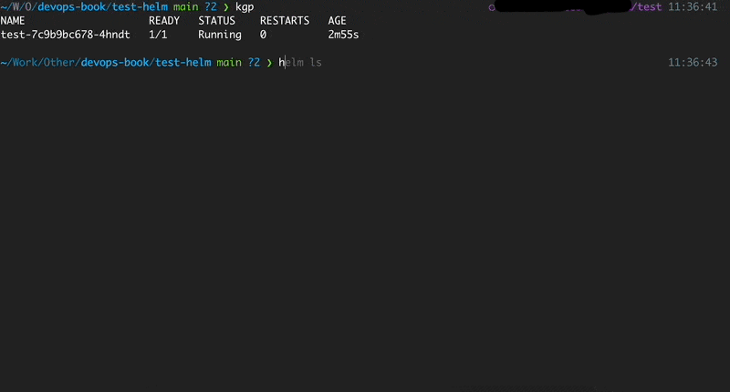

helm diff

Helm diff is a helm plugin that shows a diff explaining what a helm upgrade would change.
It works the same way when you make a "terraform plan". You see the changes and then, if everything is ok, you apply the changes.
This is so useful because there must be a situation where you accidentally delete a very important resource and everything stops working in production.
How to install
Helm
helm plugin install https://github.com/databus23/helm-diff
From source
You can also install this tool manually from the GitHub
How to use
The Helm Diff Plugin
* Shows a diff explaining what a helm upgrade would change:
This fetches the currently deployed version of a release
and compares it to a local chart plus values. This can be
used visualize what changes a helm upgrade will perform.
* Shows a diff explaining what had changed between two revisions:
This fetches previously deployed versions of a release
and compares them. This can be used visualize what changes
were made during revision change.
* Shows a diff explaining what a helm rollback would change:
This fetches the currently deployed version of a release
and compares it to the previously deployed version of the release, that you
want to rollback. This can be used visualize what changes a
helm rollback will perform.
Usage:
diff [flags]
diff [command]
Available Commands:
release Shows diff between release's manifests
revision Shows diff between revision's manifests
rollback Show a diff explaining what a helm rollback could perform
upgrade Show a diff explaining what a helm upgrade would change.
version Show version of the helm diff plugin
Flags:
--allow-unreleased enables diffing of releases that are not yet deployed via Helm
-a, --api-versions stringArray Kubernetes api versions used for Capabilities.APIVersions
--color color output. You can control the value for this flag via HELM_DIFF_COLOR=[true|false]. If both --no-color and --color are unspecified, coloring enabled only when the stdout is a term and TERM is not "dumb"
-C, --context int output NUM lines of context around changes (default -1)
--detailed-exitcode return a non-zero exit code when there are changes
--devel use development versions, too. Equivalent to version '>0.0.0-0'. If --version is set, this is ignored.
--disable-openapi-validation disables rendered templates validation against the Kubernetes OpenAPI Schema
--disable-validation disables rendered templates validation against the Kubernetes cluster you are currently pointing to. This is the same validation performed on an install
--dry-run disables cluster access and show diff as if it was install. Implies --install, --reset-values, and --disable-validation
-h, --help help for diff
--include-tests enable the diffing of the helm test hooks
--install enables diffing of releases that are not yet deployed via Helm (equivalent to --allow-unreleased, added to match "helm upgrade --install" command
--kube-version string Kubernetes version used for Capabilities.KubeVersion
--kubeconfig string This flag is ignored, to allow passing of this top level flag to helm
--no-color remove colors from the output. If both --no-color and --color are unspecified, coloring enabled only when the stdout is a term and TERM is not "dumb"
--no-hooks disable diffing of hooks
--normalize-manifests normalize manifests before running diff to exclude style differences from the output
--output string Possible values: diff, simple, json, template. When set to "template", use the env var HELM_DIFF_TPL to specify the template. (default "diff")
--post-renderer string the path to an executable to be used for post rendering. If it exists in $PATH, the binary will be used, otherwise it will try to look for the executable at the given path
--repo string specify the chart repository url to locate the requested chart
--reset-values reset the values to the ones built into the chart and merge in any new values
--reuse-values reuse the last release's values and merge in any new values. If '--reset-values' is specified, this is ignored
--set stringArray set values on the command line (can specify multiple or separate values with commas: key1=val1,key2=val2)
--set-file stringArray set values from respective files specified via the command line (can specify multiple or separate values with commas: key1=path1,key2=path2)
--set-string stringArray set STRING values on the command line (can specify multiple or separate values with commas: key1=val1,key2=val2)
--show-secrets do not redact secret values in the output
--strip-trailing-cr strip trailing carriage return on input
--suppress stringArray allows suppression of the values listed in the diff output
-q, --suppress-secrets suppress secrets in the output
--three-way-merge use three-way-merge to compute patch and generate diff output
-f, --values valueFiles specify values in a YAML file (can specify multiple) (default [])
--version string specify the exact chart version to use. If this is not specified, the latest version is used
Additional help topics:
diff
Use "diff [command] --help" for more information about a command.